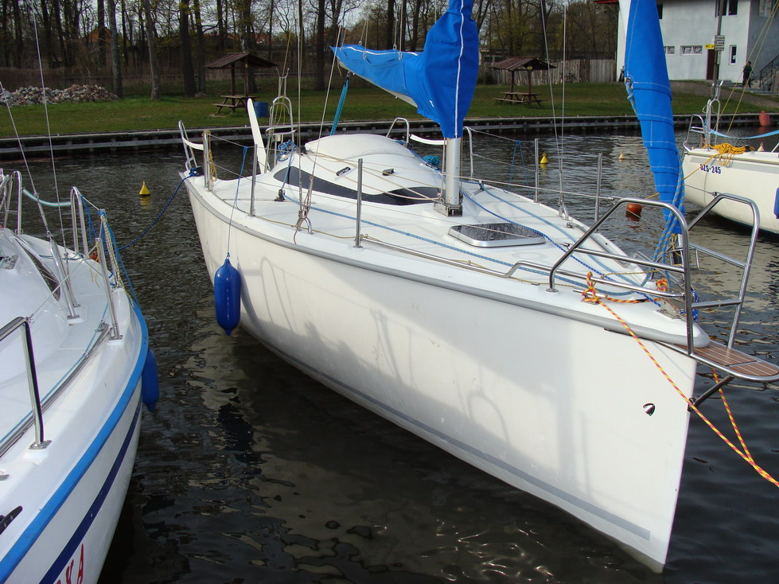

Twister800n

Opis:
Twister 800N jest jachtem turystyczno-regatowym, który łączy w sobie szybkość, wygodę i bezpieczenstwo. Jacht jest zwrotny i przyjemny w prowadzeniu dla maksymalnie 8 osób. Posiada olbrzymi, wygodny kokpit oraz funkcjonalnie zagospodarowane wnętrze z możliwością oddzielenia kabiny dziobowej i systemem audio.
Zdjęcie Pokładu
Dane techniczne:
Rocznik 2007 / 2008
Długość - 8,00
Szerokość - 2,70
Powierzchnia żagli - 34 m2
Zanurzenie min. / max. - 0,35 m / 1,50 m
Wysokość w kabinie - 1,80 m
Ilość koji - 6 + 2
Silnik Yamaha 8KM
Miecz i ster - uchylny
Żagiel